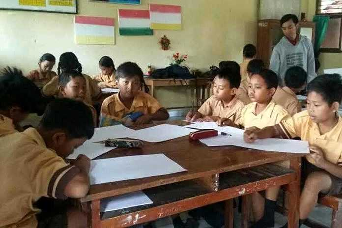

Published On: Monday, June 6 2024
A free English workshop held last weekend has brought new hope to members of the local community striving to improve their language skills. Organized by the Bright Future Foundation, the event aimed to provide accessible language education to people of all ages and backgrounds.
The workshop took place at the Community Learning Center and attracted over 100 participants, including students, professionals, and even elderly citizens. Many attendees expressed their excitement about the opportunity to learn English without financial burden, something often considered a luxury.
“Our goal is to break down barriers in education,” said Sarah Johnson, coordinator of the workshop. “Language is power, and we believe everyone deserves a chance to gain that power, regardless of their economic status.” Throughout the full-day event, participants engaged in a variety of interactive activities, including vocabulary games, pronunciation drills, grammar lessons, and real-life conversation practice.
The sessions were led by experienced English teachers and volunteers passionate about community development. One highlight of the workshop was a special session on job interview techniques conducted entirely in English. Participants learned how to introduce themselves confidently, answer common questions, and express their thoughts clearly—all essential skills for career advancement.
“Before today, I was always nervous speaking English,” said Lina, a university student. “But this workshop made me feel more confident. I practiced with others, and now I know I can keep improving.” the workshop also included a resource corner where attendees could take home free English learning materials such as books, worksheets, and access to online platforms. The organizers hope this will motivate participants to continue learning after the event.
In addition to language instruction, the workshop emphasized the importance of cultural understanding. Through storytelling and group discussions, learners explored different customs and traditions from English-speaking countries, fostering a greater appreciation for global diversity.Due to the overwhelmingly positive feedback, the Bright Future Foundation announced plans to make the workshop a monthly event. “This is just the beginning,” said Johnson. “We are committed to creating a supportive environment where people can grow, learn, and connect through language.”